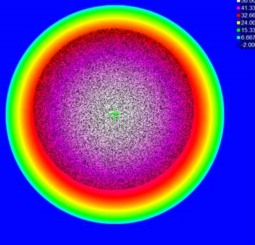
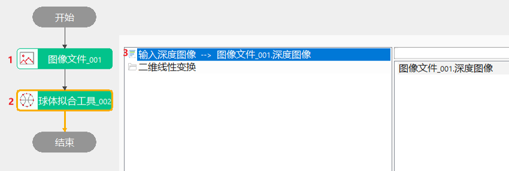
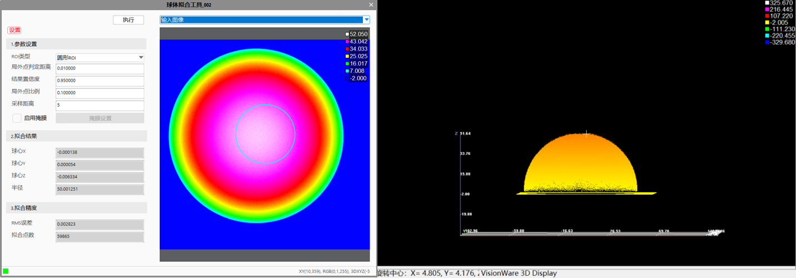
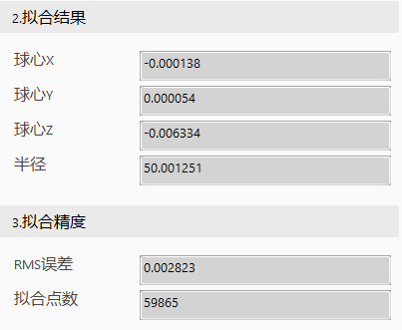

拟合得到球心坐标。

主要是剔除深度数据图像中的局外点，根据内点数据计算得到球体的解析表达式，以协助后续3D相机全局标定等操作。
主要是基于Ransac算法框架（需设置距离阈值、置信度和局外点比例）来获取次优球体，再对次优球体通过迭代寻优的方法获得最优的拟合球体。

Step 1 【局外点判定距离】0.005~0.01（看拟合点数，点数太少就需要放宽）
Step 2 【局外点比例】0.3
Step 3 【结果置信度】0.9999
Step 4 【采样距离】1（一般调1，需要加速可适当提高）
注：框ROI可先观看三维点云图，适当调整ROI的大小；


| 现象描述 | 解决方法 |
|---|---|
| 拟合不出球心 | 局外点判定距离放宽些 |
| 分类 | 参数名称 | 参数描述 |
|---|---|---|
| 属性窗口 | ROI类型 | 待拟合区域，分为8种：整幅图像、矩形、仿射矩形、圆形、圆环段、椭圆、多边形、多仿射矩形。 |
| 局外点判定距离 | 参与拟合的深度数据点到拟合球体距离的最大值。 | |
| 局外点比例 | 局外点占总深度数据点的比例。 | |
| 结果置信度 | 衡量使用内点构造拟合球体的可信程度，置信度越大，拟合球体越可靠。 | |
| 采样距离 | 每隔多少采样一次，缩短球体拟合时间。 | |
| 启用掩膜 | 用于过滤不需要拟合的区域，对该部分添加掩膜。选择“是”时，则可通过属性高级界面进行掩膜设置 | |
| 图像窗口 | 深度图像 | 显示待检测的深度图像，显示为伪彩色图像。 |
| 拟合区域 | 在图像上显示待拟合区域。 | |
| 数据链 | 输入深度图像 | 输入待拟合的深度图像。 |
| 二维线性变换 | ROI相对于模板的平移、旋转、缩放变换。 |
| 分类 | 参数名称 | 参数说明 |
|---|---|---|
| 输出栏 | 输出深度图像 | 输出拟合后的深度图像 |
| 球心 | 拟合得到的球心 | |
| 半径 | 拟合得到的球体半径 | |
| 拟合误差 | 平面拟合结果的RMS误差 | |
| 球体拟合的点数 | 球体拟合过程中用到的点的个数 | |
| 执行结果 | 工具执行结果 | |
| 执行时间 | 工具执行时间 |
参见“\Samples\3D\深度图\球体拟合.gvp”。